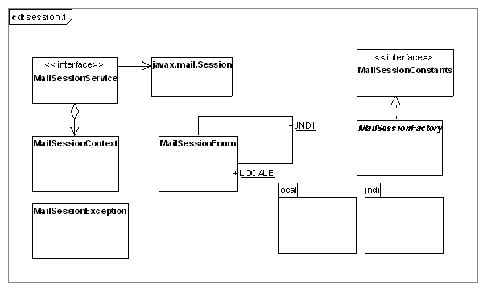

Service Session
Ce package permet la construction et l’envoi de mail type MimeMessage
(voir le modèle ci-dessus) via le protocole SMTP. Pour envoyer un mail
en java, on dispose de l’API standard maintenue par Sun : javamail.
Cette API, permet d’instancier une Session, et d’envoyer un MimeMessage
via cette session (javax.mail.Session).
L’objectif du Framework est ici de s’abstraire du fournisseur
de la session mai. Ce service MailSessionService possède actuellement
deux implémentations dans le Framework :
- LocaMailSessionService : qui permet d’instancier directement
dans la JVM courante une Session mail à utiliser.
- JndiMailSessionService : qui permet d’obtenir une Session mail,
grâce au service rendu par un serveur d’application type
(Websphere, Jboss, …). Il suffit alors de configurer sur le serveur
d’application une mail session accessible via JNDI
(voir la documentation de votre serveur d’application).
Et ensuite la classe JndiMailSessionService grâce à son
MailSessionContext fournit à la construction, sera capable
d’accéder via JNDI à cette ressource distante. L’avantage
de cette solution est de centraliser la gestion des sessions mail,
à un unique point, le serveur d’application. Toute application
java distante pourra alors bénéficier de ce service sans connaître
aucune information relative au serveur SMTP, à l’authentification…
On obtiendra une instance d’un MailSessionService via la classe MailSessionFactory.
